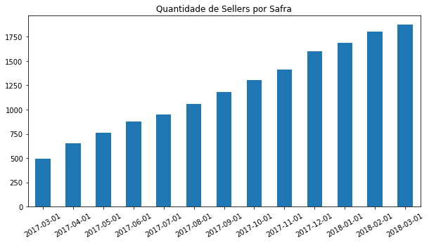
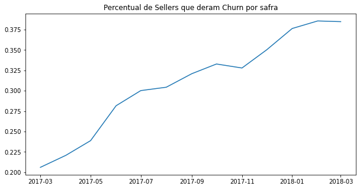
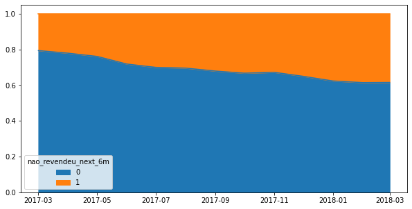

import dateutil
import numpy as np
import pandas as pdAnalytical Base Table
A Analytical Base Table (ABT), é a tabela analítica que é construída para treinar um modelo de machine learning. Cada registro deve representar uma entidade do problema que está sendo modelado e cada coluna uma feature da entidade, além de ter também uma coluna que será o target que queremos prever.
Aqui iremos construir uma analytical base table para prever churn. Para isso, iremos utilizar os dados da Olist disponíveis no Kaggle e iremos também construir a ABT utilizando Pandas. Caso queira uma outra discussão detalhada sobre construção de uma ABT de churn utilizando SQL ao invés de Pandas, recomendo fortemente um dos melhores conteúdos sobre machine learning na prática que existe, a playlista DTona no canal do youtube Téo Me Why.
Primeiro, vamos carregar as tabelas necessárias:
df_order_items = pd.read_csv('../datasets/olist_order_items_dataset.csv')
df_orders = pd.read_csv('../datasets/olist_orders_dataset.csv', parse_dates=['order_approved_at'])
df_sellers = pd.read_csv('../datasets/olist_sellers_dataset.csv')df_abt = pd.DataFrame()
for safra in pd.date_range('2017-03-01', '2018-03-01', freq='MS', normalize=True):
data_ref_safra = pd.to_datetime(safra).date()
data_inf_inclusiva = data_ref_safra - dateutil.relativedelta.relativedelta(months=12)
data_sup_exclusiva = data_ref_safra + dateutil.relativedelta.relativedelta(months=6)
# filtrando o período histórico
df_historico = (
df_order_items
.merge(df_orders, on='order_id', how='left')
.query(" order_status == 'delivered' ")
.query(f"order_approved_at >= '{data_inf_inclusiva}' & order_approved_at < '{data_sup_exclusiva}' ")
.merge(df_sellers, on='seller_id', how='left')
)
# calculando as features
df_features = (
df_historico
.query(f'order_approved_at < "{data_ref_safra}" ')
.groupby('seller_id')
.agg(
uf = ('seller_state', 'first'),
receita_12m = ('price', 'sum'),
qtde_orders_12m = ('order_id', 'nunique'),
qtde_items_12m = ('product_id', 'count'),
qtde_items_dist_12m = ('product_id', 'nunique'),
data_ult_vnd = ('order_approved_at', 'max')
)
.reset_index()
.assign(data_ref = pd.to_datetime(f'{data_ref_safra}'))
.assign(recencia = lambda df_: (df_['data_ref'] - df_['data_ult_vnd']).dt.days)
)
# calculando o target
df_target = (
df_historico
.query(f'order_approved_at >= "{data_ref_safra}" & order_approved_at < "{data_sup_exclusiva}" ')
.filter(['seller_id'])
.drop_duplicates()
)
# cruzando as features com o target: gerando a ABT
df_abt_safra = (
df_features
.merge(df_target, how='left', on='seller_id', indicator=True)
.assign(nao_revendeu_next_6m = lambda df_: np.where(df_['_merge'] == 'left_only', 1, 0))
.assign(data_ref = lambda df_: df_['data_ref'].dt.date)
.filter(['data_ref',
'seller_id',
'uf',
'receita_12m',
'qtde_orders_12m',
'recencia',
'qtde_items_12m',
'qtde_items_dist_12m',
'nao_revendeu_next_6m'
])
)
df_abt = pd.concat([df_abt, df_abt_safra])ABT Construída
df_abt| data_ref | seller_id | uf | receita_12m | qtde_orders_12m | recencia | qtde_items_12m | qtde_items_dist_12m | nao_revendeu_next_6m | |
|---|---|---|---|---|---|---|---|---|---|
| 0 | 2017-03-01 | 001cca7ae9ae17fb1caed9dfb1094831 | ES | 899.10 | 4 | 0 | 9 | 1 | 0 |
| 1 | 2017-03-01 | 004c9cd9d87a3c30c522c48c4fc07416 | SP | 2629.31 | 17 | 1 | 20 | 15 | 0 |
| 2 | 2017-03-01 | 011b0eaba87386a2ae96a7d32bb531d1 | SP | 99.98 | 1 | 144 | 2 | 1 | 1 |
| 3 | 2017-03-01 | 014c0679dd340a0e338872e7ec85666a | MG | 220.00 | 2 | 9 | 2 | 1 | 0 |
| 4 | 2017-03-01 | 01cf7e3d21494c41fb86034f2e714fa1 | PR | 992.90 | 8 | 4 | 8 | 3 | 0 |
| ... | ... | ... | ... | ... | ... | ... | ... | ... | ... |
| 1869 | 2018-03-01 | ff82e8873fba613f2261a9acc896fd84 | MG | 124.60 | 4 | 12 | 4 | 3 | 1 |
| 1870 | 2018-03-01 | ffc470761de7d0232558ba5e786e57b7 | SP | 385.59 | 5 | 0 | 5 | 5 | 0 |
| 1871 | 2018-03-01 | ffdd9f82b9a447f6f8d4b91554cc7dd3 | PR | 1450.20 | 11 | 7 | 12 | 8 | 0 |
| 1872 | 2018-03-01 | ffeee66ac5d5a62fe688b9d26f83f534 | SP | 1709.87 | 13 | 0 | 13 | 3 | 0 |
| 1873 | 2018-03-01 | fffd5413c0700ac820c7069d66d98c89 | SP | 5488.60 | 33 | 14 | 34 | 22 | 0 |
15656 rows × 9 columns
Público e Churn no Tempo
Para cada seller em um período de tempo (safra), temos uma série de features que irá nos ajudar a prever o target nao_revendeu_next_6m.
df_abt['data_ref'].value_counts(ascending=True).plot(kind='bar', title='Quantidade de Sellers por Safra', figsize=(10,5), rot=30);
df_abt.groupby('data_ref')['nao_revendeu_next_6m'].mean().plot(title='Percentual de Sellers que deram Churn por safra', figsize=(10,5), xlabel='');
(df_abt.groupby(['data_ref', 'nao_revendeu_next_6m'])['nao_revendeu_next_6m'].size() / df_abt.groupby('data_ref').size()).unstack().plot(kind='area', figsize=(10,5), xlabel='');
De fato, o churn vem aumentando ao longo do tempo. Isso talvez seja esperado, dado que a operação da Olist em 2017-03 era bem recente e ali havíamos os primeiros clientes, chamados early adopters, que podem simplesmente ter testado o serviço e abandonado.
Como próximo passo, podemos já treinar um modelo de machine learning. Mas esse é um assunto para o próximo post, fique ligado!
df_abt.to_csv("../datasets/abt_churn.csv", index=False, sep=';')